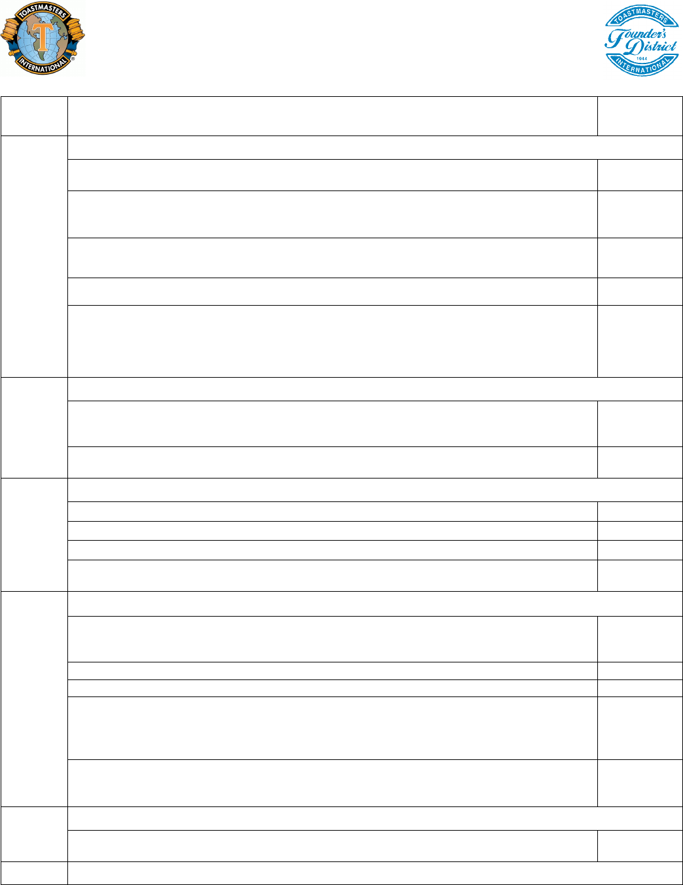

Northwestern SpeakEasy Toastmasters Club
Chair (or Pro Tem) opens meeting
★
Welcome! – Guest Introductions – Ice Breaker Activity – Introduce the Toastmaster
Introduction by Toastmaster
★ Start the meeting – Introduce each of the facilitators
Thought of the Day: (read the quote aloud and provide some context/inspiration)
! ! ! ! ! !
Grammarian: (read WotD aloud, record grammar errors & WotD use throughout the meeting)
! ! ! ! !
“Ah-Um” Counter: (keep a tally of overused words and filler sounds used by each person)
Time Keeper & Vote Counter: (record time & 1-word summaries of each speech, give time
signals [TT: 1-2min, Speeches: Usually 4-6 or 5-7 *check with speaker, Evals: 2-3min], conduct
Toastmaster introduces the Table Topics Chair
(Provide 3-4 prompts for impromptu speeches; try to call on people who don’t have other
large speaking roles; start with old members, try to include a new member)
Table Topics Chair returns conduct to the Toastmaster, who asks for the…
★ Time Keeper’s Report and VOTE for Best Table Topics Response
Toastmaster introduces each speaker
Speaker returns conduct to the Toastmaster, who asks for the…
★ Time Keeper’s Report and VOTE for Best Speech
Toastmaster introduces the General Evaluator
(Introduce each evaluator; bring up facilitators for their reports; provide an overall
★ Time Keeper’s Report and VOTE for Best Evaluation
★ Grammarian’s Report
★ Ah-Um Counter’s Report
General Evaluation of the Meeting
General Evaluator returns conduct to the Toastmaster
★ VOTE for Sparky (optional)
★ Awarding voting winners and AWARD TROPHIES
Toastmaster returns conduct of the meeting to the Chair
★
Guest Comments – Member Comments – Final Announcements
Meeting adjourned, until next Friday, May 27, 2016 @ 4:30 pm.